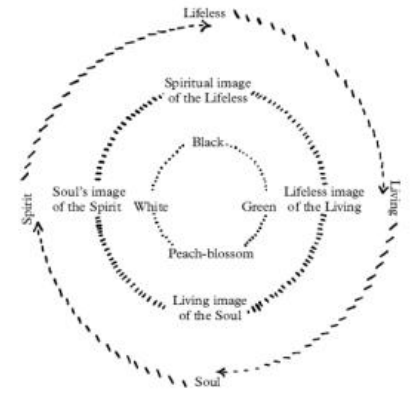

Relações entre cores e as quatro cores-imagem
Compreenda “imagem” comparando cores em seu contexto.
Uma breve retomada dos fundamentos
Leia estas definições antes da explicação do capítulo. Se os termos já forem familiares, continue na lição abaixo.
Corpo físico, corpo etérico, corpo astral e Eu: quatro perguntas organizadoras
Físico nomeia a existência material; etérico, a organização formativa viva proposta por Steiner; astral, a organização da experiência interior; Eu, a individualidade espiritual. Respondem a perguntas diferentes sobre um ser humano.
Explore as ideias centrais do capítulo
A ideia principal da leitura
Steiner começa com um campo verde contendo vermelho, cor de flor de pessegueiro ou azul. O verde ao redor é fisicamente o mesmo na comparação, mas ele descreve relações sentidas diferentes: animação com o vermelho, maior equilíbrio com a cor de flor de pessegueiro e afastamento com o azul. O primeiro passo importante é estudar relações, em vez de tratar cada cor como um nome isolado.
Ele chama o verde de imagem sem vida do vivo; a cor de flor de pessegueiro, de imagem viva da alma; o branco ou a luz, de imagem anímica do espírito; e o preto, de imagem espiritual do que não tem vida. “Imagem” significa que um nível apresenta outro sem se tornar idêntico a ele. O verde pintado pode representar a vida sem ser uma planta viva. A analogia esclarece o vocabulário, mas não estabelece toda a classificação espiritual. A cor de flor de pessegueiro é um termo artístico, não uma cor universal da pele humana nem um padrão de saúde, valor ou identidade.
Leia o diagrama do livro

Cor · Palestra 1, 6 de maio de 1921 · GA 291 · página 22 do PDF fornecido.
Trecho da fonte, recortado sem redesenho nem recoloração. Paginação da captura em PDF, não paginação impressa verificada. É o diagrama reproduzido na edição; não é identificado aqui como quadro-negro original preservado.
Comece pelos nomes das cores no interior e leia cada relação em direção ao exterior: o preto é descrito como imagem espiritual do inanimado; o verde, como imagem inanimada do vivo; a cor de flor de pessegueiro, como imagem viva da alma; o branco, como imagem anímica do espírito. O diagrama organiza o vocabulário de cores-imagem de Steiner.
Quatro cores aqui não significam corpo físico, corpo etérico, corpo astral e Eu. Trata-se de uma relação na teoria da cor, não de um esquema dos membros humanos. Leia “imagem” como o modo de apresentação de algo, sem identificá-la com a realidade apresentada.
As quatro cores-imagem
| Cor | Relação na classificação de Steiner |
|---|---|
| Verde | Imagem sem vida do vivo |
| Flor de pessegueiro | Imagem viva da alma |
| Branco / luz | Imagem anímica do espírito |
| Preto | Imagem espiritual do que não tem vida |
Palavras da leitura
Cor-imagem: verde, cor de flor de pessegueiro, branco e preto na classificação de Steiner. Sem vida não significa sem valor; distingue uma representação da atividade viva.
Imagem e brilho nomeiam relações diferentes
Uma imagem apresenta algo sem ser idêntica a ele. O verde pintado representa crescimento vivo, embora a tinta não cresça. Steiner amplia a relação às quatro cores-imagem. Brilho enfatiza manifestação expressiva. Amarelo, azul e vermelho são abordados pela distribuição da atividade, além da identidade de matiz.
Centro amarelo desvanecendo para fora e borda azul desvanecendo para dentro relacionam centro e limite diferentemente. O vermelho uniforme oferece outro equilíbrio. Descreva a transição antes do humor atribuído; inverta depois o arranjo. Isso esclarece o suposto “desejo” da cor como indicação artística: investigar tendência, não impor lei a todo pigmento ou observador.
Leitura relacionada: Colour · Lectures 1–2.
Leia a fonte à luz dos conceitos
Rudolf Steiner · Colour · 1992 translation · John Salter · Lecture 1 in the supplied collection
Nesse círculo podemos ver as relações entre certas cores fundamentais: preto, verde, flor de pessegueiro e branco.
Trecho selecionado da edição inglesa indicada; nova tradução de estudo em português. Quebras de linha normalizadas.
Abra a fonte ou o índice de edições →
O que este trecho significa
O círculo organiza as quatro cores-imagem pelas relações entre inanimado, vida, alma e espírito. A lição explica as correspondências e usa comparações de cores para tornar as relações visíveis.
O foco desta lição
Compreenda “imagem” comparando cores em seu contexto.
Veja a ideia num exemplo
Coloque um quadrado vermelho sobre uma folha verde; depois substitua-o por um quadrado azul do mesmo tamanho. Descreva a relação entre centro e fundo antes de nomear um objeto, como flor ou lago.
Manter tamanho e fundo constantes torna a comparação mais clara. Se sua experiência diferir da de Steiner, registre a diferença com precisão. O estudo continua sendo útil.
Explique a ideia e seu raciocínio
Defina o conceito central em linguagem comum. Explique por que o autor o introduz, o que ele distingue e como o trecho sustenta essa explicação. Depois relacione-o ao foco desta lição: Compreenda “imagem” comparando cores em seu contexto.
Uma pista, se precisar
Releia o trecho e sua explicação. Identifique o que o autor relaciona ou distingue. Explique essa relação antes de aplicá-la a um exemplo próprio.
Seu texto permanece nesta página, a menos que você ative o salvamento.
Encontre a ligação na leitura
Volte ao trecho inicial. Identifique as palavras que sustentam sua explicação e indique a referência. Se tiver o livro, leia a seção ao redor e acrescente um ponto que o trecho curto não inclui.
Trabalhe com a ideia
Faça três campos verdes iguais, com centros vermelho, cor de flor de pessegueiro e azul. Escreva uma frase sobre cada relação. Depois explique por que o verde pintado é uma imagem da natureza viva, e não a própria vida.
Confira sua compreensão
O que o exemplo do verde esclarece sobre “imagem”?
Ver uma resposta comentada
Uma pintura verde pode apresentar a aparência de uma planta viva e continuar sendo material sem vida. Steiner amplia essa relação para uma classificação espiritual, que deve ser avaliada separadamente.
Como o exemplo ajuda a compreender a leitura?
Ver uma resposta comentada
Manter tamanho e fundo constantes torna a comparação mais clara. Se sua experiência diferir da de Steiner, registre a diferença com precisão. O estudo continua sendo útil.
Como seria uma resposta bem fundamentada à atividade?
Ver uma resposta comentada
Um registro útil identifica a cor central alterada e um efeito específico sobre o campo verde. Depois explica que a imagem pintada não é uma planta viva. Não é necessário concordar com todo sentimento proposto.
Como avaliar sua resposta
Confira quatro pontos: atribuição correta, distinção clara, razão apoiada na leitura e reconhecimento dos limites do exemplo. Releia o que ficou vago. Discordâncias fundamentadas podem demonstrar compreensão; não é preciso concordar nem relatar experiências espirituais.
O que mudou na sua compreensão?
Mude uma condição do seu exemplo. Explique qual parte da resposta continua válida e qual precisa de revisão.
Comparar com sua primeira tentativa
Sua primeira tentativa aparece aqui quando JavaScript está disponível. Você também pode voltar ao início.
Antes de marcar a lição como estudada: explique a ideia com suas palavras, indique o trecho e reconheça um limite do exemplo. Use as respostas comentadas acima para conferir seu raciocínio.